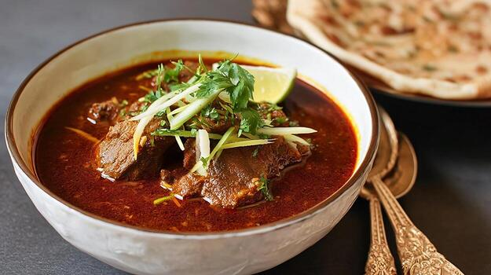

Mutton Nihari

Description
Mutton nihari is a slow-cooked, flavorful stew made with tender pieces of
mutton, aromatic spices, and a rich gravy. It is traditionally cooked over
low heat for several hours, allowing the meat to become tender and the
spices to develop a deep flavor.
It is commonly served hot with naan or other Indian breads and garnished
with fresh coriander, ginger, and lemon.
Ingredients
- 500 g mutton
- 2 large onions
- 2 tablespoons ginger-garlic paste
- 2-3 green chilies
- 3 tablespoons cooking oil
- 2 tablespoons wheat flour
- 1 teaspoon turmeric powder
- 1 teaspoon red chili powder
- 1 teaspoon coriander powder
- 1 teaspoon cumin powder
- 1 teaspoon garam masala
- Salt to taste
- Whole spices such as cardamom, cloves, cinnamon, and bay leaf
- Fresh coriander
- Fresh ginger
- Lemon
Steps
- Wash the mutton and cut it into suitable pieces.
- Heat oil in a large pot and fry the sliced onions until golden brown.
- Add ginger-garlic paste and cook for a few minutes.
- Add the mutton and cook until it is lightly browned.
- Add the spices and salt, then mix everything well.
- Add enough water to cover the mutton and bring it to a boil.
- Cover the pot and cook the mutton on low heat until it becomes tender.
- Mix wheat flour with water to make a smooth paste.
- Add the flour mixture to the nihari and simmer until the gravy thickens.
- Garnish with fresh coriander, sliced ginger, and lemon.
- Serve the mutton nihari hot with naan or other bread.
Home